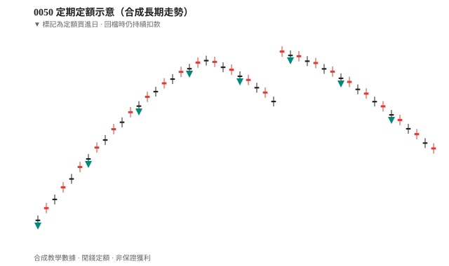

被動 ETF 與定期定額（以 0050 為例）¶
本篇你會學到¶
- 0050 是什麼、買它的用途與獲利方式
- 基本買賣、加碼與離場的意義
- 進場前三項自我評估
- 為什麼必須用閒錢（與認賠殺出的關係）
- 網路常見說法哪些要保留、哪些要修正
免責聲明
以下為教學觀念整理，不構成投資建議，亦不保證任何報酬。
0050 是什麼¶
| 項目 | 說明 |
|---|---|
| 代號 | 0050（4 碼，在交易所像股票一樣買賣） |
| 類型 | 被動型 ETF（指數股票型基金） |
| 追蹤標的 | 台灣 50 指數 — 台股市值前 50 大成分股的一籃子 |
| 白話 | 買一檔 0050 ≈ 一次分散買進多檔大型權值股 |
與 個股 差異：風險較分散，但報酬仍隨大盤與產業結構起伏，並非穩賺。
0050 vs 006208¶
兩檔皆追蹤台灣 50，長期定額選其一即可（不必兩檔都買）。對照表、費率與折溢價 → ETF 費用與折溢價
核心概念：用途與獲利方式¶
買 0050 通常為了什麼¶
| 目的 | 說明 |
|---|---|
| 參與台股大盤 | 看好台灣整體經濟與龍頭企業長期表現 |
| 分散 | 降低「只押一檔公司」的風險 |
| 少選股 | 不必逐一研究 50 檔成分股 |
獲利從哪裡來¶
| 來源 | 說明 |
|---|---|
| 價差 | 賣出價高於買入成本（含淨值成長） |
| 成分股股利 | 0050 持有成分股所配發的股息，會反映在基金運作與配息政策上（依 ETF 設計，見公開說明書） |
不是保證利息；與銀行定存機制完全不同（見下文）。
操作流程：買賣、加碼、離場¶
flowchart LR
A[開戶] --> B[定期定額買入]
B --> C[長期持有]
C --> D{大跌且 thesis 不變?}
D -->|是| E[維持或加碼]
D -->|否| F[檢討 thesis]
C --> G{需用錢或 thesis 變?}
G -->|是| H[規劃離場]
| 動作 | 意義 |
|---|---|
| 買進 | 透過券商下單（限價/市價），見 交易流程 |
| 定期定額 | 每月固定日期、固定金額買入，平滑不同價位；小幅折溢價可忽略，大額單筆宜留意 iV 值 |
| 加碼 | 市場低迷時，在定額之外額外用預留閒錢買入（需事先規劃） |
| 離場 | 賣出換現金；長期配置者通常少賣，但生活所需或投資論點（thesis）改變時仍須賣 |

案例：0050 定額遇到大跌
新手常見建議（本站整理版）¶
若你對個股、技術分析尚不熟悉，但又想開始投資，許多教學會建議：
- 只用閒錢（不影響生活費、緊急預備金）
- 採被動型大盤 ETF（如 0050）+ 定期定額
- 長期持有，少做短線進出
- 心態要有耐心，接受淨值起伏
這與「先把紀律建立好，再談進階操作」一致，見 如何選模式。
心態像定存，風險不像定存
可以學定存的耐心與紀律（不天天盯、不亂砍），但 0050 會波動，短期可能虧損，沒有定存本金保證。
為什麼強調「閒錢」¶
定期定額與長期持有的前提是：不必為生活費在低點被迫賣出（認賠殺出）。
| 資金類型 | 遇到大跌又急需用錢時 |
|---|---|
| 生活費、短期會用到的錢 | 可能被迫低點賣出，虧損變實際損失 |
| 閒錢（短時間內不會動用） | 較能撐過低谷，維持定額紀律 |
完整風控說明見 資金配置。這也是 進場前三項評估 裡「現金流需求」與「加倉空間」的底層原因。
進場前三項評估¶
在開始定期定額前，建議先想清楚：
| # | 問題 | 為什麼重要 |
|---|---|---|
| 1 | 加倉空間 | 大跌時若仍看好，你還有閒錢能分批加碼嗎？ |
| 2 | 現金流需求 | 這筆錢放進去，會影響日常開銷或緊急用錢嗎？ |
| 3 | 台股信心 | 你是否願意多年持有，並相信台灣經濟與產業中長期仍具競爭力？ |
三項越踏實，遇到回撤時越不容易恐慌賣在低點。資金原則見 資金配置。
關於「長期一定賺」：正確說法¶
網路常見說法¶
「拉長幾年看通常還是賺的」「長期趨勢一直成長」「反彈只是早晚的事」
本站修正（教學用）¶
| 可接受 | 需修正 |
|---|---|
| 過去台股大盤曾有長期向上階段 | ❌ 「保證」幾年後賺錢 |
| 定期定額可降低買在最高點的風險 | ❌ 「跟定存一樣穩」 |
| 若 thesis 不變，大跌可視為加碼機會 | ❌ 「反彈一定很快」 |
| 精準表述 |
|---|
| 投資沒有保證獲利；0050 追蹤大盤，大盤可多年低迷或大幅回撤。 |
| 定期定額的價值在紀律與分散進場，不在消除虧損可能。 |
| 能否「撐過低谷」取決於閒錢、加倉空間與心理承受度。 |
遇到大跌怎麼辦¶
flowchart TD
A[大盤大跌] --> B{三項評估仍成立?}
B -->|是| C[維持定額或依計畫加碼]
B -->|否| D[暫停加碼或檢討配置]
C --> E[不預測何時反彈]
D --> F[勿借錢攤平]
| 做法 | 說明 |
|---|---|
| 維持定額 | thesis 不變時，紀律繼續買 |
| 加碼 | 僅用預先保留的閒錢，非借貸 |
| 不建議 | 恐慌全賣、或無計畫 all in 抄底 |
「逢低加碼」的前提是：你還有錢、且仍看好台股中長期 — 不是賭明天反彈。
「牛市賣、熊市多買」？¶
| 對象 | 建議 |
|---|---|
| 新手 | 先專心定期定額 + 長抱，不要頻繁「低買高賣」大盤 |
| 進階 | 可在 組合管理 下做核心再平衡，需有書面規則 |
「牛市賣一些」與「長期不建議賣」並不矛盾：核心部位長抱，僅在明確規劃下減碼（例如獲利了結一部分、或生活需用錢）。
0050 以外的選擇¶
0050 偏重大型權值股（電子權重高）。依需求可認識：
| 類型 | 方向（舉例） |
|---|---|
| 高股息 ETF | 偏重配息策略 → 高股息 ETF |
| 全市場 ETF | 涵蓋範圍更廣 |
| 債券 ETF | 股債配置、降低波動 |
詳見 ETF 入門、ETF 費用與折溢價；進階主動型見 主動 ETF。
常見說法對照表¶
| 說法 | 本站看法 |
|---|---|
| 0050 是 ETF | ✅ 正確 |
| 用閒錢投資 | ✅ 正確 |
| 新手定期定額、少騷操作 | ✅ 務實 |
| 進場前想加倉空間、現金流、信心 | ✅ 正確 |
| 長期一定賺 | ❌ 改為「可能，但不保證」 |
| 跟定存一樣 | ❌ 改為「紀律可參考，風險不同」 |
| 反彈早晚的事 | ❌ 改為「若 thesis 在，可等待，但時間不確定」 |
建議閱讀順序¶
自我檢查¶
1.（概念題）進場前三項評估是哪三項？
參考答案：加倉空間（大跌還有閒錢嗎）、現金流需求（不影響生活費）、台股信心（願意多年持有）。
2.（判斷題）「0050 長期一定賺」可以當定額理由嗎？
參考答案：不行。可接受的是「過去曾有多頭階段、定額降低買在最高點風險」，但不保證未來獲利。
3.（情境題）定額途中遇到 -30% 回撤，你事先該準備什麼？
參考答案：閒錢、可選的加碼規則、心理預期與 thesis；見 案例：定額遇大跌。
重點回顧¶
- 0050 = 被動型大盤 ETF，適合閒錢、長期、紀律參與台股。
- 進場前評估：加倉空間、現金流、台股信心。
- 不保證獲利；心態可像定存般耐心，風險絕不像定存。
- 新手優先：定期定額；大跌加碼需有預留資金與堅定 thesis。